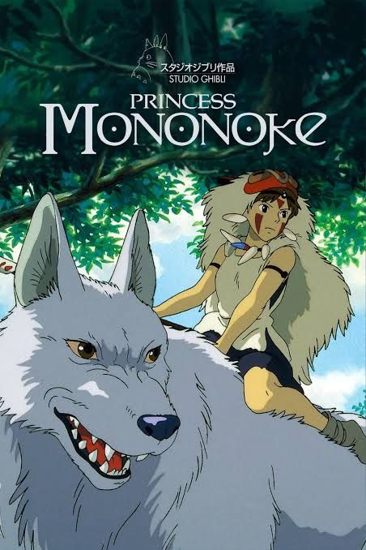

¿Suzume De Que Trata?
La historia sigue a Suzume, una adolescente que descubre una misteriosa puerta que conduce a desastres sobrenaturales. Cuando la abre, comienza una aventura épica para cerrar otras puertas similares por todo Japón antes de que causen más destrucción. En el camino, se une a un joven que tiene una misión similar. La película mezcla fantasía, drama y crecimiento personal
¿Your Name De Que Trata?
Dos adolescentes, Mitsuha y Taki, descubren que misteriosamente intercambian cuerpos a pesar de vivir en lugares diferentes. A medida que comienzan a comunicarse y conocerse a través de estos intercambios, surge un fuerte vínculo entre ellos. Sin embargo, un giro inesperado relacionado con el tiempo y una catástrofe pasada los obliga a luchar contra el destino para encontrarse. Es una mezcla de romance, fantasía y drama emocional.
¿Kimi no Suizō o Tabetai De Que Trata?
Un estudiante solitario encuentra el diario de una compañera de clase, Sakura, y descubre que padece una enfermedad terminal en el páncreas. A pesar de sus diferencias, los dos desarrollan una amistad profunda mientras ella le enseña a disfrutar la vida. La película es una conmovedora historia sobre la vida, la muerte y la importancia de las conexiones humanas.
¿El Tiempo Contigo De Que Trata?
Miyo es una chica de secundaria que se transforma en gato para acercarse al chico que le gusta, Kento, quien no presta atención a ella en su forma humana. Sin embargo, cuanto más tiempo pasa siendo un gato, más difícil se vuelve regresar a su forma humana. Es una historia sobre el deseo de ser amado y aceptado, y de encontrarse a uno mismo.
¿Bubble De Que Trata?
En un Tokio post-apocalíptico aislado del mundo por una lluvia de burbujas que desafiaron la gravedad, un joven llamado Hibiki conoce a una misteriosa chica con habilidades especiales. Juntos desafían las leyes de la física y descubren secretos que pueden cambiar su mundo. Es una mezcla de ciencia ficción, romance y acción con una fuerte carga visual.
¿A Silent Voice De Que Trata?
Shoya Ishida, un joven que en su infancia acosó a Shoko Nishimiya, una compañera sorda, busca redimirse años después cuando se reencuentran en la secundaria. La película trata temas profundos como el bullying, el suicidio, el arrepentimiento y la redención, destacando el poder del perdón y la empatía.
¿Haikyuu!! De Que Trata?
Aunque es más conocida como serie, Haikyuu!! también tiene películas recopilatorias y secuelas. La historia gira en torno a Shoyo Hinata, un joven apasionado por el voleibol a pesar de su baja estatura. Se une al equipo del instituto Karasuno, donde debe superar sus límites junto con su rival Kageyama. Esta historia de deportes se enfoca en el trabajo en equipo, la superación personal y la pasión por el juego.
¿Ride Your Wave De Que Trata?
Hinako es una surfista universitaria que se enamora del bombero Minato. Su relación florece hasta que una tragedia cambia todo: Minato muere en un accidente. Sin embargo, Hinako descubre que puede verlo cada vez que canta una canción especial cerca del agua. La película mezcla romance, fantasía y duelo de forma emotiva y visualmente hermosa.

¿Josee, the Tiger and the Fish De Que Trata?
Tsuneo es un joven universitario con sueños de estudiar en el extranjero. Su vida cambia cuando conoce a Josee, una chica con discapacidad que apenas sale de casa. Aunque su relación comienza con tensiones, ambos empiezan a influenciarse profundamente. Es una historia sobre crecimiento personal, amor y enfrentar los miedos, llena de sensibilidad y profundidad emocional.
¿El Viaje de Chihiro De Que Trata?
Chihiro, una niña de 10 años, entra accidentalmente a un mundo mágico habitado por dioses y espíritus. Sus padres son transformados en cerdos, y para rescatarlos, Chihiro debe trabajar en una casa de baños dirigida por la bruja Yubaba. Es una historia de crecimiento, identidad y valentía, con una estética rica en mitología japonesa.

¿Princess Mononoke De Que Trata?
Ashitaka, un joven príncipe maldito por un demonio, busca una cura y se ve envuelto en un conflicto entre los humanos que destruyen la naturaleza y los dioses del bosque que la protegen. Allí conoce a San, una chica criada por lobos, conocida como la princesa Mononoke. La película trata temas ecológicos, espirituales y sociales con gran profundidad.
¿El Castillo Ambulante De Que Trata?
Sophie, una joven modista, es transformada en una anciana por una maldición. En su búsqueda por romper el hechizo, conoce a Howl, un mago misterioso que vive en un castillo mágico que se mueve. Juntos enfrentan una guerra y descubren el valor del amor, la identidad y la autoaceptación.

¿La Tumba de las Luciérnagas De Que Trata?
Ambientada durante los últimos días de la Segunda Guerra Mundial, sigue a dos hermanos, Seita y Setsuko, que luchan por sobrevivir tras perder a su madre y su hogar por los bombardeos en Japón. Es una desgarradora historia sobre la inocencia perdida, el sufrimiento de los civiles y la crueldad de la guerra.
¿Ponyo De Que Trata?
Ponyo es un pez dorado con rostro humano que sueña con convertirse en una niña humana. Tras ser rescatada por un niño llamado Sosuke, ambos desarrollan una fuerte amistad mientras el equilibrio natural del mundo se ve amenazado. Es una tierna y colorida historia inspirada libremente en La Sirenita, con temas de amor, naturaleza y magia.
¿Mi Vecino Totoro De Que Trata?
Dos niñas, Satsuki y Mei, se mudan al campo con su padre mientras su madre está hospitalizada. En el bosque cercano, descubren a Totoro, un espíritu gigante y amigable que las guía en pequeñas aventuras llenas de ternura y fantasía.
¿Kaze Tachinu De Que Trata?
Basada en la vida de Jiro Horikoshi, el ingeniero que diseñó los cazas japoneses durante la Segunda Guerra Mundial. La película mezcla realidad y fantasía para retratar los sueños de Jiro de volar y crear aviones hermosos, mientras enfrenta la realidad de la guerra y una historia de amor trágico.
¿Kotonoha no Niwa De Que Trata?
Un estudiante de secundaria que sueña con ser zapatero comienza a saltarse clases para diseñar zapatos en un jardín durante los días de lluvia. Allí conoce a una misteriosa mujer mayor que también parece estar escapando de su vida. A través de sus encuentros, se forma una conexión íntima, pero también efímera.
¿Wolf Children De Que Trata?
Hana se enamora de un hombre lobo con quien tiene dos hijos: Ame y Yuki. Tras la repentina muerte de su pareja, Hana debe criar sola a sus hijos que luchan entre su naturaleza humana y su parte salvaje. Es una historia profundamente conmovedora sobre la maternidad, la identidad y el crecimiento.
¿Arrietty De Que Trata?
Basada en la novela The Borrowers, la historia sigue a Arrietty, una pequeña persona que vive escondida bajo el suelo de una casa humana, tomando prestadas cosas mínimas para sobrevivir. Su vida cambia cuando es descubierta por un chico humano enfermo. La película trata sobre la amistad, la confianza y el valor de las pequeñas cosas.
¿El Castillo en el Cielo De Que Trata?
Pazu y Sheeta emprenden una aventura para descubrir la legendaria isla flotante de Laputa, perseguida también por piratas y el gobierno por sus secretos tecnológicos. La película combina acción, fantasía, ciencia ficción y crítica al uso del poder.